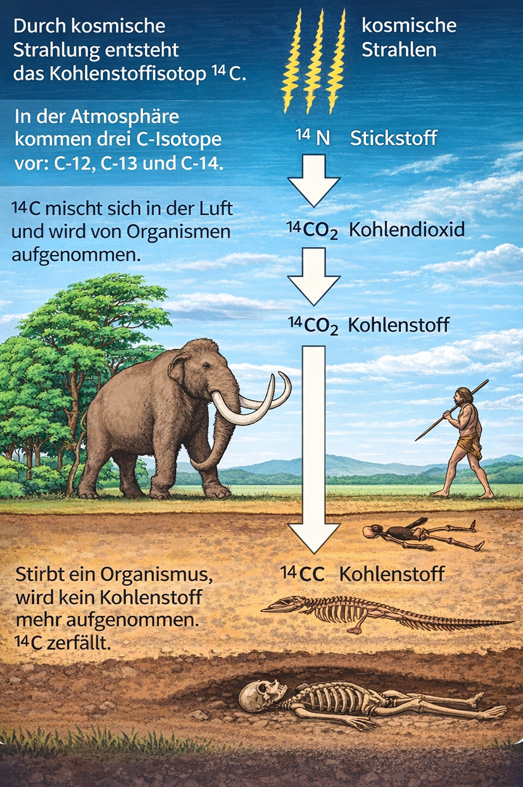

Wie bestimmt man das Alter von Mumien, Knochen oder versteinerten Bäumen? Mit einer eingebauten Uhr in jedem Lebewesen!

Das Bild zeigt den Weg von C-14: In der Atmosphäre entsteht es durch kosmische Strahlung, gelangt als CO2 in Pflanzen und dann über die Nahrung in Tiere und Menschen. Solange ein Organismus lebt, nimmt er ständig neues C-14 auf. Nach dem Tod wird kein neues C-14 mehr aufgenommen und der vorhandene Anteil zerfällt Schritt für Schritt. Genau diesen Restanteil messen Forscher, um das Alter eines Fundes zu bestimmen.
In der Luft gibt es ein ganz besonderes Atom: Kohlenstoff-14 (kurz: C-14). Es ist radioaktiv, das heißt, es zerfällt mit der Zeit. Aber keine Angst – die Menge ist winzig klein und völlig ungefährlich!
Solange ein Lebewesen lebt (Mensch, Tier, Baum), nimmt es ständig neues C-14 aus der Luft auf – beim Atmen oder über die Nahrung. Deshalb bleibt die Menge an C-14 im Körper immer gleich.
Aber sobald das Lebewesen stirbt, nimmt es kein neues C-14 mehr auf. Ab jetzt tickt die Uhr! Das vorhandene C-14 zerfällt langsam – und zwar immer mit der gleichen Geschwindigkeit.
Je weniger C-14 noch in einem Fund steckt, desto älter ist er. Die Halbwertszeit von C-14 beträgt 5.730 Jahre. Das heißt: Nach 5.730 Jahren ist nur noch die Hälfte des C-14 übrig.
Radioaktive Atome senden beim Zerfall winzige Signale aus – wie ein leises „Klick". Diese Signale kann man mit einem speziellen Gerät zählen: dem Geiger-Müller-Zähler. Je öfter es „klickt", desto mehr radioaktive Atome sind noch da.
Man nimmt eine Probe vom Fund (ein kleines Stückchen Knochen, Holz oder anderes Material).
Man hält den Geiger-Müller-Zähler an die Probe und zählt, wie oft es pro Minute „klickt". Das nennt man die Aktivität (gemessen in Becquerel = Zerfälle pro Sekunde).
Man vergleicht die gemessene Aktivität mit der Aktivität, die ein frisches (lebendes) Material hätte.
Aus dem Unterschied liest man an der Zerfallskurve das Alter ab!
Frische Milch enthält C-14, weil die Kuh Gras gefressen hat (das C-14 aus der Luft aufgenommen hat). Misst man mit dem Geiger-Müller-Zähler 1 Liter Milch, erhält man etwa 300 „Klicks" pro Sekunde (= 300 Becquerel). Das ist der Startwert – so viel C-14 hat frisches Material.
1991 fanden Wanderer in den Ötztaler Alpen eine Mumie im Eis: den „Ötzi". Wissenschaftler nahmen eine winzige Probe und maßen die C-14-Aktivität. Sie war viel niedriger als bei frischem Material. Ergebnis: Ötzi ist etwa 5.300 Jahre alt – fast eine ganze Halbwertszeit!
Die Tempelanlage Göbekli Tepe in der heutigen Türkei ist etwa 11.500 Jahre alt. Bei einem Alter von rund 11.460 Jahren sind etwa 25% C-14 übrig, also nach 2 Halbwertszeiten. Genau solche Messwerte helfen Forschern, das Alter früher Kultstätten zu bestimmen.
100% C-14 → gerade gestorben (0 Jahre)
50% C-14 → 1 Halbwertszeit vergangen (5.730 Jahre)
25% C-14 → 2 Halbwertszeiten (11.460 Jahre)
12,5% C-14 → 3 Halbwertszeiten (17.190 Jahre)
6,25% C-14 → 4 Halbwertszeiten (22.920 Jahre)
Bewege den Schieberegler und beobachte, wie der C-14-Anteil über die Jahrtausende abnimmt. Klicke auf die Beispiele, um zu sehen, wo Milch, Ötzi und Göbekli Tepe auf der Kurve liegen!
Klicke auf eine Lücke, dann auf das passende Wort.
Lies die Antworten aus der C-14-Zerfallskurve ab!
Schiebe die Wortkarten in die Lücken!
Nutze ChatGPT, Gemini oder Claude.ai. Gib den Prompt selbst ein – die KI soll in 3 Sätzen antworten.
💡 Tipp: „Erkläre mir in genau 3 Sätzen, …"
Die C-14-Methode hat eine Grenze – sehr alte Dinge kann man damit nicht mehr datieren. Frage eine KI: Bis zu welchem Alter funktioniert die C-14-Methode und warum gibt es eine Grenze?
Viele bekannte Funde wurden mit der C-14-Methode datiert. Frage eine KI: Welche berühmten Funde wurden mit C-14 datiert?
Für Dinge, die älter als 50.000 Jahre sind, braucht man andere Methoden. Frage eine KI!
Beantworte alle 12 Fragen zur C-14-Methode. 50% richtig = Note 4.